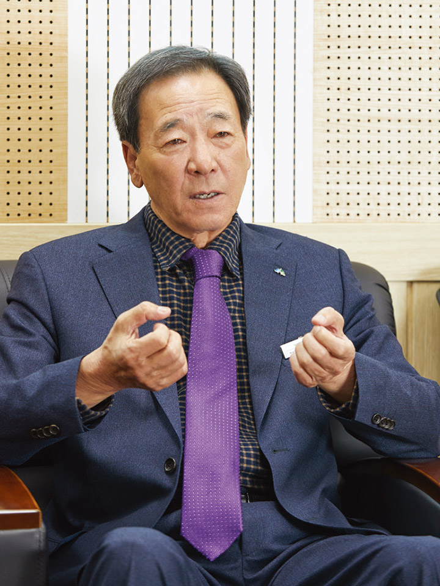
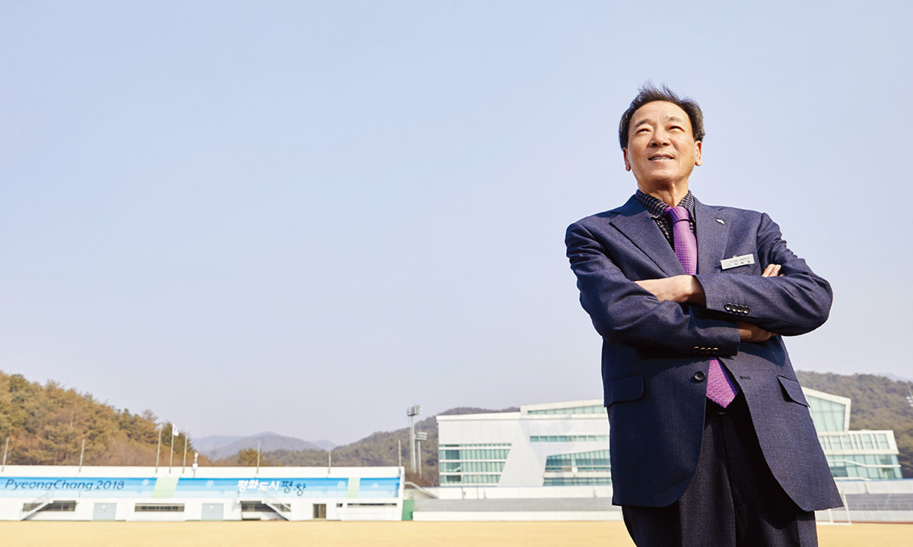
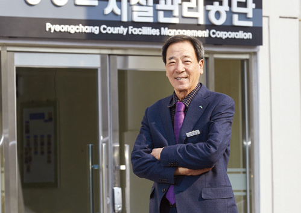

지난 4월 출범한 김천시시설관리공단은 증가하는 공공 시설물을 효율적·전문적·체계적으로 관리하기 위해 시가 별도로 설립한 김천시 최초의 지방공기업이다.
김천시의 시정 목표인 ‘시민 모두가 행복한 김천’과 그 뜻을 맞추어 ‘시민들에게 행복을 주는 일류 공기업’이 되기 위해 △고객 중심 혁신 경영, △성과 중심 책임 경영, △수익 창출 건전 경영, △소통하는 상생 경영의 경영 전략을 추진해나갈 채비를 마치고 본격적인 운영에 돌입했다. 김재광 이사장을 만나 시민 모두가 행복한 김천을 만들어갈 청사진에 대해 들어봤다.
글 편집실 사진 조인기

●
김천시시설관리공단(이하 공단)을 설립한 배경과 계기 등에 대해 설명을 부탁드립니다.
김천시에서는 혁신도시를 조성한 이후 문화·체육·관광 등 정주 기반 시설이 대폭 증가하고 있습니다. 시민들의 서비스 질 향상에 대한 욕구가 커짐에 따라 2019년 하반기부터 시설관리공단의 설립 추진이 본격화되었습니다.
김천시의 2021년도 당초예산이 일반·특별회계를 합쳐 총 1조1천2백억 원으로 도시 인프라와 주민 편의 시설에 투입되는 예산이 대폭 늘어남에 따라 공공 시설물에 대한 신규 사업 추진과 유지 관리를 함께하기에는 한계가 있었습니다. 이에 시설 건립과 운영·관리를 분리해서 담당하는 것이 주민생활 편익과 복지 증진에 더욱더 효율적이라는 시와 시의회, 시민 의견을 수렴해서 시설관리공단을 설립하게 되었습니다.
●
공단이 출범하기까지 어려운 점이 있었는지요. 공단의 설립 과정과 설립 당시의 상황 등은 어떠했는지 궁금합니다.
공단을 설립하는 과정에 큰 장애요인이나 어려움은 없었습니다. 경북도 내에 있는 10개 시 중에서 6개 시가 오래전부터 시설관리공단을 설립하여 운영하고 있었기 때문에 시민들과 시의회에서도 설립의 필요성에 대한 공감대가 충분히 형성되었고 모두 한마음 한뜻을 모아 추진할 수 있었습니다.
2020년 5월에 설립 타당성 용역을 완료하여 6월 주민공청회, 7월 설립심의회, 9월 공단 설립 및 운영에 관한 조례가 제정되어 비교적 빠르게 추진되었습니다. 시에서도 원활한 공단 설립을 위해 T/F팀을 구성·운영하여 제규정 제정, 인력 채용, 금고지정, 사무실 확보 등 행정적·재정적 지원을 다해 2021년 4월 30일에 위·수탁협약식과 출범식을 거행했습니다.


●
공단의 조직과 구성원은 어떻게 구성되어 있는지요.
공단의 조직은 1본부, 3팀 체제로 본부장, 경영지원팀, 문화관광팀, 체육장사팀으로 구성되어 있으며, 정원은 기간제 근로자까지 포함하여 82명이나 현재 인력은 52명이 근무하고 있습니다.
설립 초기인 만큼 위수탁시설의 원활한 인계·인수를 위하여 본부장과 경영지원팀장 등 3명은 시로부터 파견받았습니다. 이중 일반직은 공개 채용으로 충원하였고, 업무직과 기간제 근로자는 시에서 근무하던 기존 인력을 특별 채용했습니다.
●
공단의 주요 시설 및 수행하고 있는 사업 안내를 부탁드립니다.
현재 공단이 직접 운영하는 시설은 체육시설, 문화관광시설, 주민복지시설 등 3개 분야의 6개 사업입니다. 체육 시설로는 전국 최고의 시설을 자랑하는 김천실내수영장과 국민체육센터인데 특히 수영장은 경영풀, 다이빙풀, 연습풀이 겸비되어 있어 연간 전국 단위의 수영대회가 다수 개최되고 있습니다.
문화 시설로는 사명대사공원과 시립박물관이 3대 문화권 사업으로 조성된 시설로서 부지 144천㎡의 규모로 족욕장 등 체험동, 한옥 체험 숙박동, 솔향다원, 한복체험관, 세계도자기박물관, 전동관람차(해피카) 등의 부속시설이 있으며, 금년 12월 말에 준공할 예정인 생태휴양펜션 31개 등 숙박동 시설을 부항댐 주변에 건립 중에 있습니다.
또한 주민복지 시설로는 금년 말에 준공을 목표로 건립하고 있는 시립추모공원으로 99천㎡ 부지 내에 화장로 4기와 2만 위의 봉안시설 및 자연장지를 최고의 현대시설로 조성하고 있습니다.
●
현재 김천시의 공공 시설물의 인프라와 현황은 어떤지요. 가장 우선적으로 개선해야 할 과제와 이를 해결하기 위한 방안은 어떻게 구상하고 계신지요.
김천시는 국제 규격의 인프라를 갖춘 대규모의 스포츠 시설과 혁신도시, 고속철도를 중심으로 한 관광 인프라 등 공공 시설물이 지속적으로 확충되고 있습니다.
주요 공공시설로는 종합스포츠타운 내 14개 체육시설, 친환경생태공원 등 40여 개 공원시설, 수도산자연휴양림 등 4개 휴양시설, 시립미술관 등 3개의 문화예술 시설, 공영주차장 등 다양한 시설이 있습니다.
지금 공공시설물 관리는 시에서 담당 실·과 단위로 개별적으로 관리되고 있는데 일부 비효율적인 측면이 있어 전문적이고 체계적인 통합 관리를 통해 대민서비스의 질을 향상하고, 효율적으로 운영할 수 있도록 만전을 기해야 할 것입니다.
●
경북 김천시 최초로 설립된 공기업의 초대 이사장으로서 임하는 각오가 남다를 것 같습니다. 3년간 임기 내에 꼭 이루고 싶은 과업이 있다면 무엇인가요.
초대 이사장으로서 큰 영광이기도 하지만 막중한 책임감을 느끼고 있으며, 공단 업무 추진에 있어 속도보다는 방향성에 중점을 두고 업무를 추진하고자 합니다. 임기 내 무엇을 이루겠다는 것보다는 차근차근 공단을 안정화하고 시민들로부터 신뢰와 사랑을 받는 공기업을 만드는 데 중점을 두고 있습니다.
김천시의 공공 시설물을 공단에서 전부 위·수탁하기에는 여러 가지 한계와 어려움이 있을 겁니다. 시에서 직접 운영하거나, 민간기관·단체에 위탁하거나, 공단에 위탁하거나 어떤 방법으로든 시민들에게 제공하는 서비스의 질을 높일 수 있고, 잘 할 수 있는 곳에서 운영하는 것이 바람직하다고 생각합니다.
3년 후 시민들로부터 시설관리공단을 ‘참 잘 만들었다’, ‘친절하더라’, ‘달라졌다’라는 평가를 받을 수 있도록 전 임직원이 하루하루 최선을 다하겠습니다.
●
생태휴양펜션, 김천시립추모공원 등 공공 시설물이 꾸준히 증가하는 상황에서 이를 전문적·체계적으로 관리·운영할 수 있는 방안이 필요한데요. 공익적·경제적 가치를 추구하면서 공공 서비스를 제고시켜 나가기 위해 강구하고 있는 공단만의 노하우나 전략 등이 있다면 무엇인가요.
공단은 주민복리 증진 등을 위해 설립된 공기업으로서 설립 취지에 맞게 경제성과 공공성의 조화와 균형을 맞춰 운영하는 것이 매우 중요합니다. 그동안 시설물을 공공성에만 집중해서 운영해 오던 것을 공단이 설립되었다고 해서 단기간 내에 경제성을 접목하기는 쉽지 않을 수 있습니다.
공단은 설립 초기라 예산에서 인건비가 차지하는 비중이 높습니다. 인력의 효율적인 채용과 배치 등을 통해 경영의 효율성을 높이는 데 중점을 두고 있습니다. 특히 매 회계년도마다 사업장 단위로 수입·지출, 이용객 만족도 등 경영 평가를 실시하여 건전재정이 되도록 노력하고자 합니다.
●
김재광 이사장님은 39년간 다양한 공직생활 경력과 지방공기업의 전문 능력을 쌓아오신 걸로 알고 있습니다. 전문 역량을 갖춘 행정 전문가로서 이사장님만의 경영전략이나 경영 방침은 무엇인지 궁금합니다.
시설관리공단에서 운영하는 시설은 그동안 시에서 직접 운영하던 시설이라 공직생활을 한 사람으로서 시설 현황 파악과 시와 공단 간의 유기적인 업무 체계를 위한 협력과 소통에 큰 도움이 된다고 생각합니다. 또한 경제, 관광, 복지 등 다양한 분야에서 경험했던 행정 경험들은 공단 조직을 이끌어 가는 데 매우 유익하다고 자부합니다.
공단이 운영하는 시설은 지역 주민들에게 가장 밀접한 생활 서비스를 제공하는 것으로서 시민들의 만족도 제고가 가장 중요할 것입니다.
공단의 모든 업무는 ‘시민이 주인이다’라는 자세로 시민 중심의, 시민의 눈높이에 맞게 추진하고 있습니다. ‘손님이 짜다면 짜고, 맵다면 맵다’라는 명언처럼 시민을 먼저 생각하는 최우선 원칙에 따라 경영해 나가고 있습니다.
●
코로나19 위기 극복과 지역 사회 확산 방지를 위해 공단이 추진하고 있는 내용이 있다면 소개해 주세요.
공단도 코로나19 위기를 비켜 가지는 못했습니다. 수영장과 한옥 체험숙박동 등은 오랜 시간 운영을 중단해야 했지만 극복을 위한 노력은 멈추지 않았습니다.
이사장을 본부장으로 하는 코로나19 특별안전대책반을 구성·운영하고 있습니다. 수영장은 하루 5회차로 나누어 차수별로 100명 이내로 제한하여 입장-소독-퇴장으로 입수자의 접촉을 최대한 차단했으며, 전국체전수영대회 등 전국대회 개최 시에는 선수·임원의 전원 사전 PCR검사를 의무화하고 경기 전후 전면 소독을 실시했습니다. 또한 시립박물관은 백신 접종자에 대해서는 무료 입장을 추진했습니다.
앞으로 위드 코로나에 대비하여 전 시설에 대한 안전 점검 및 각종 프로그램의 정상화를 위한 준비에 만전을 기하도록 하겠습니다.
●
공단의 전문성과 공공성, 조직 역량 강화 등과 관련, 공단만의 강점을 꼽는다면 어떤 것이 있을까요.
공단의 강점이라면 아직 설립 초기라 특별히 내세울 것은 없으나 우수한 인력과 풍부한 공공시설을 보유하고 있다고 자부합니다. 공단 설립 시 공개경쟁 인력 채용에서 경력직의 경우 대기업 근무자가 대거 채용되었으며, 신규직도 최고 49대 1의 경쟁률을 거쳐 채용되었습니다.
현재 김천시에서 추진하고 있는 공공 시설물 건립은 감문국이야기나라 조성(199억 원), 황악지옥테마체험관(190억 원), 사명대사 모험의 나라 조성(40억 원), 추풍령 관광자원화사업(170억 원), 신음근린공원조성(490억 원), 황산공원(258억 원), 장애인국민체육센터(79억 원) 등으로 향후 사업 영역이 크게 확대될 것으로 내다보고 있습니다.
●
향후 공단의 비전과 계획, 목표 등에 대해 한말씀 부탁드립니다.
공단의 비전은 ‘시민 모두에게 행복을 주는 일류 공기업’으로 정했습니다. 공공 시설물의 주인인 시민들에게 더욱더 수준 높은 서비스를 제공함으로써 행복한 김천을 만들자는 취지입니다.
이를 위해 먼저 고객 만족 제고와 업무 혁신을 통해 ‘고객 중심 혁신 경영’을 추진하고, 공단의 사회적 책임 경영, 성과 창출과 공공성의 조화로 ‘성과 중심 책임 경영’, 투명하고 청렴한 윤리 경영, 수익구조 개선 등으로 ‘수익 창출 건전 경영’과 공단 활성화를 위해 시민 참여 확대 및 지역 경제 상생 협력으로 ‘소통하는 상생 경영’을 위해 전 임직원이 전력을 다하고자 합니다.
●
마지막으로 지방공기업 관계자분들과 독자분들게 한말씀 부탁드립니다.
지난 4월 30일 갓 출범한 공단은 이제 6개월 정도 밖에 되지 않은 지방공기업의 후발주자로서 한꺼번에 성과를 낼 수는 없을 것입니다. 공단을 설립한 계획부터 출범과 현재에 이르기까지 여러모로 도와주신 김천 시민 여러분과 시의원님, 지방공기업 관계자 여러분의 성원에 감사를 드립니다.
특히 설립 과정에서 전국의 여러 공단에 벤치마킹을 위해 방문할 때마다 관련 자료와 노하우를 아낌없이 전수해 주신 전국의 시설관리공단 관계자분들께 감사의 말씀을 드립니다. 공단은 시민과 함께 시와 동반 성장하는 동반자로서 노력을 다할 것이며, 공단 설립을 위해 성원해 주신 모든 분들께 보답하기 위해 앞으로 100년을 준비하는 마음으로 전 임직원이 열과 성의를 다해 성실히 일하겠습니다.
김천시시설관리공단이 일류 공기업으로 성장·발전할 수 있도록 많은 관심과 협조를 당부드립니다. 감사합니다.
김재광 김천시시설관리공단 이사장
“지방공기업은 주민복리 증진을 위해 경영하는 기업으로서 공익적·경제적 가치를 추구하면서 공공 서비스를 제고시켜 나가야 합니다. 사회공헌, 일자리 창출, 지속가능한 윤리경영 체계 정착을 통해 시민이 만족하는 공단이 되도록 최선을 다하겠습니다. 나아가 ‘시민들에게 행복을 주는 일류 공기업’이 되기 위해 고객중심 혁신경영, 성과중심 책임경영, 수익창출 건전경영, 소통하는 상생경영의 경영전략을 추진해 나가겠습니다.”